Every item is selected for quality and everyday craftsmanship. Tap any product for details.
Smooth, reliable, and built for daily writing.
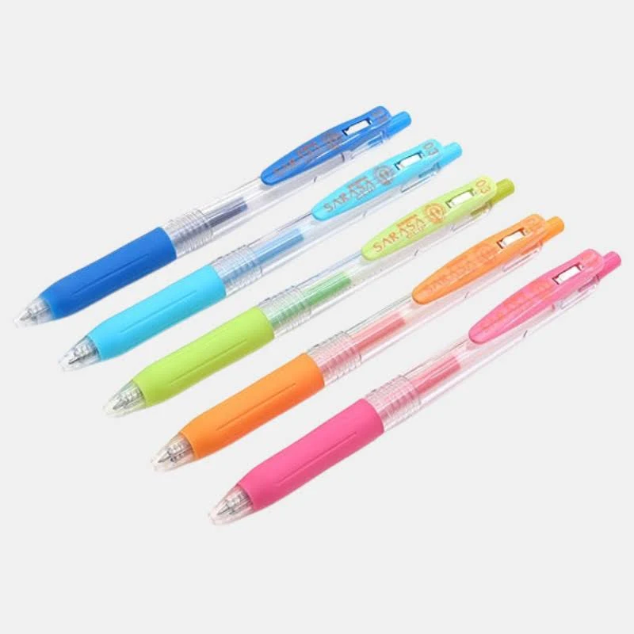
Full Spectrum
Available in 0.5mm & 0.7mm, 20 colours
$2.50 NZD
Zebra Sarasa Clip
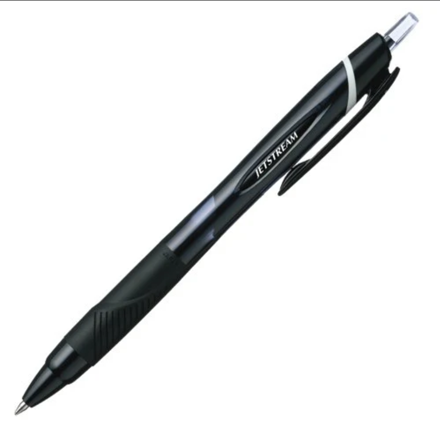
The All-Rounder
The world's smoothest writing ballpoint pen. Ultra-low friction, low writing resistance, and smooth writing feel.
$3 NZD
Uni-ball Jetstream
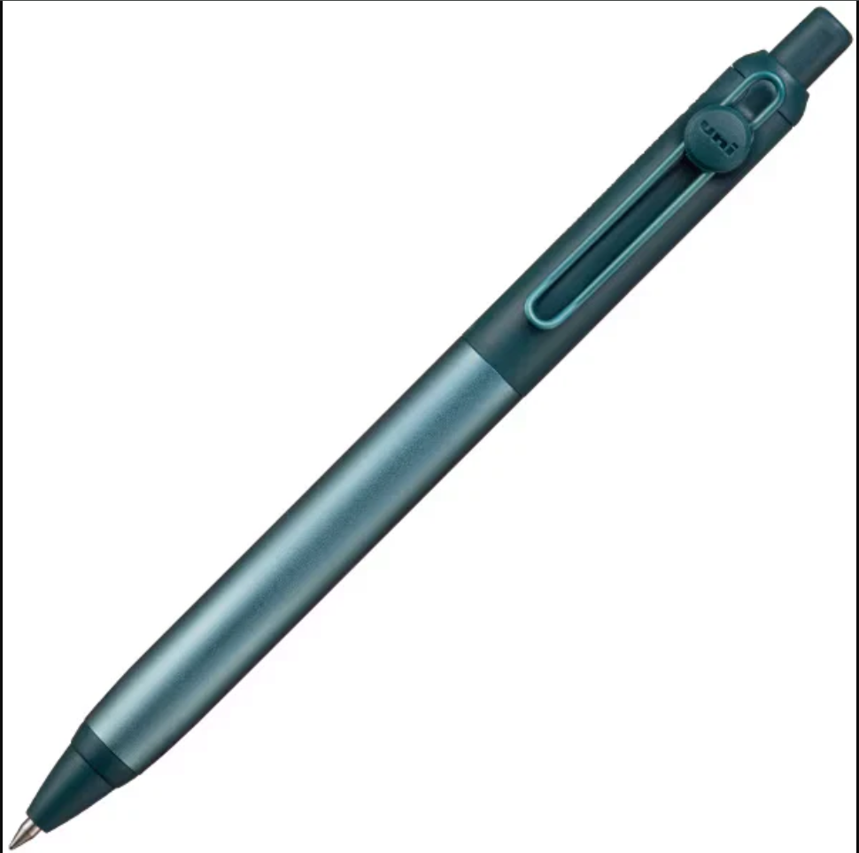
Peak Smoothness
Enjoy a comfortable “writing” moment. Stress-free and soft writing experience. New soft water-based ballpoint pen uniball ZENTO.
$15.50 NZD
Zento Flow
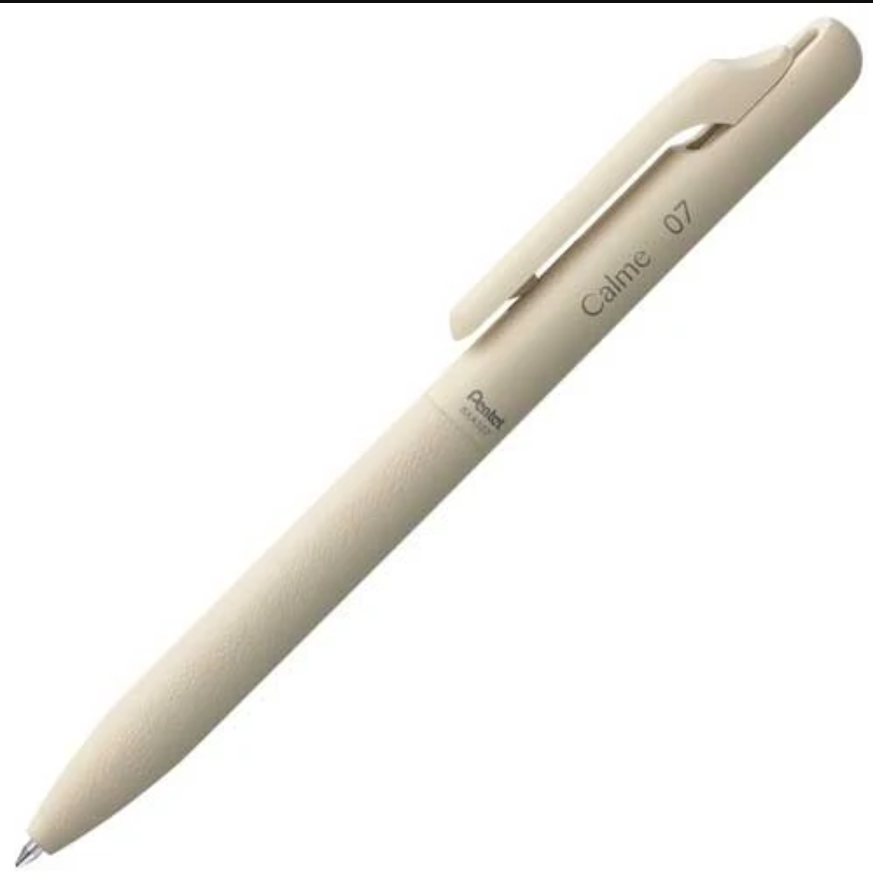
Quiet Confidence
Calme is a new smooth oil-based ballpoint pen with a quiet knocking feel and a leather-grained long grip.
$3.50 NZD
Pentel Calme
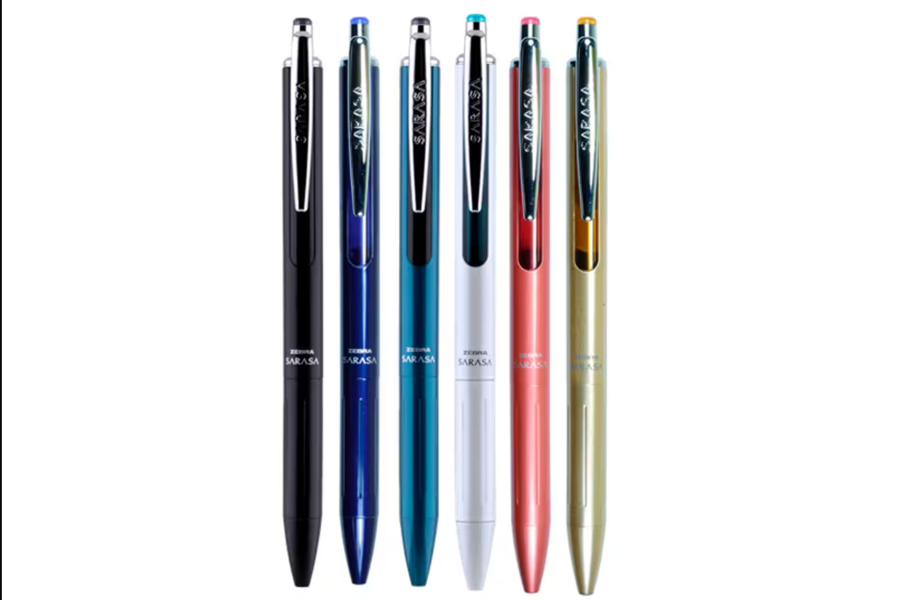
Classy
A sleek, premium gel pen with smooth ink flow, a satisfying weight, and timeless metal styling.
$15 NZD
Zebra Sarasa Grand
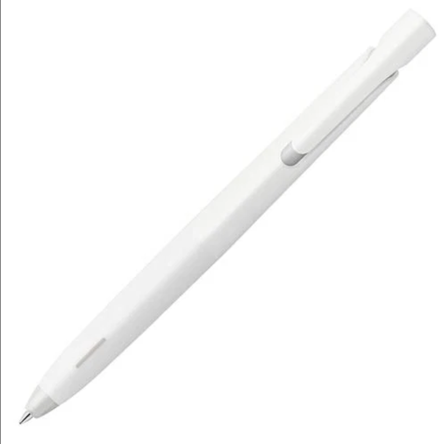
Steady Precision
Designed to reduce writing vibration and unwanted movement for a calm, stable feel. A balanced ballpoint made for smooth, controlled everyday writing.
$4 NZD
Zebra BlenU
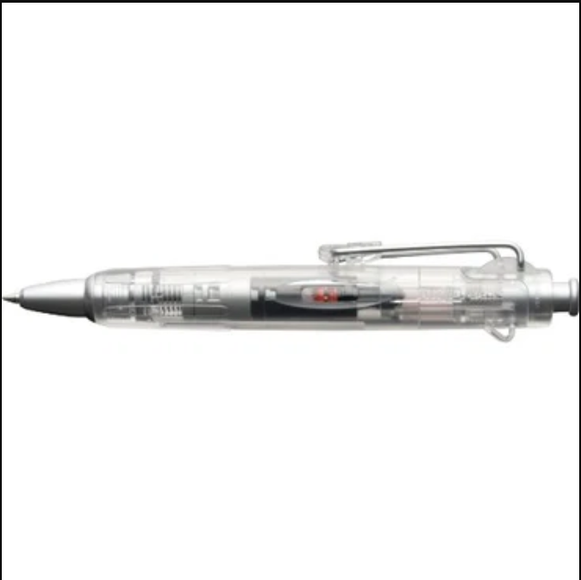
Unfailing Reliability
Pressurized with every click for clear, reliable writing; even when writing fast, upward, or on damp paper. Made for wherever the day takes you.
$8 NZD
Tombow Airpress
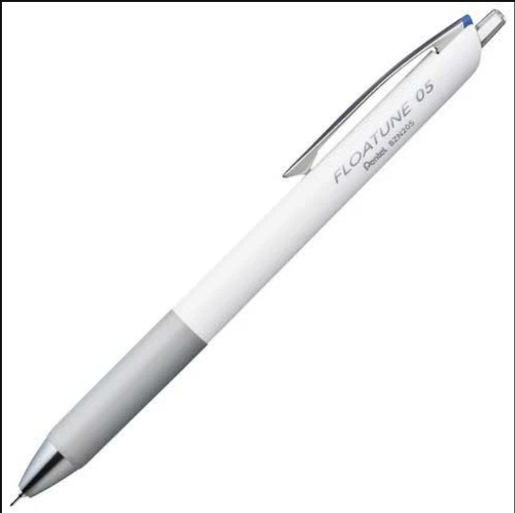
Weightless Flow
A new writing feel that allows you to write softly. The feeling of writing, the floating feeling. Frictionless ballpoint pen!
$4.50 NZD
Pentel Floatune
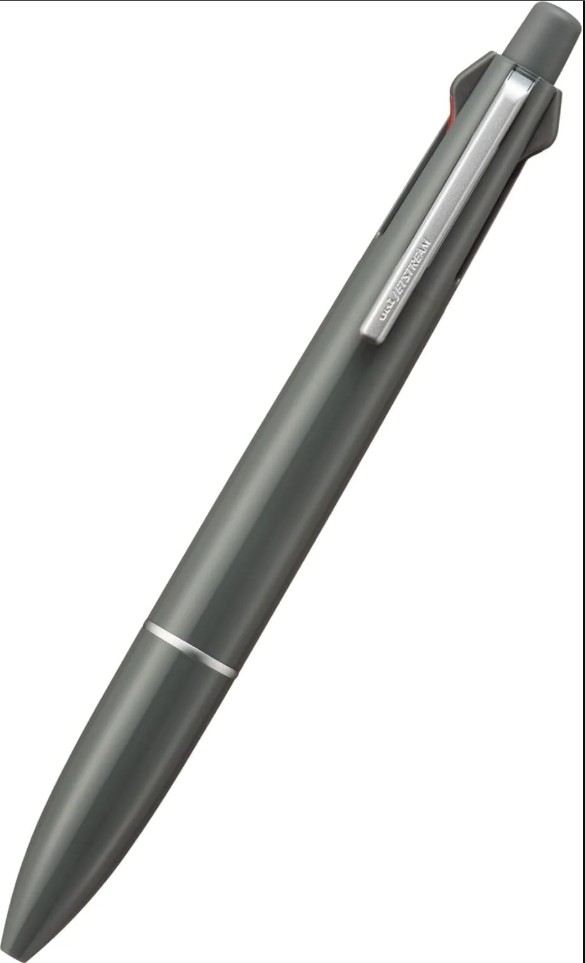
The Multitasker
Four ink colors, one mechanical pencil, and Jetstream’s signature smoothness; all in one versatile everyday pen.
$18 NZD
Uni Jetstream Multipen
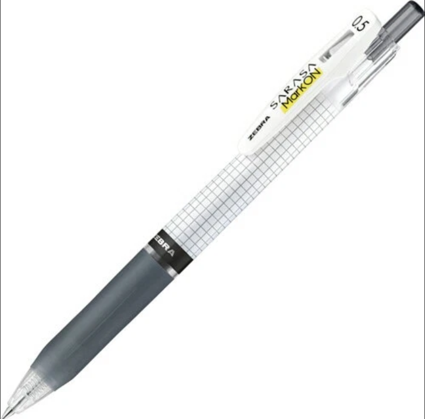
Highlight Ready
Specially formulated gel ink stays crisp under highlighter, keeping notes clean, clear, and easy to mark up.
Zebra Sarasa Markon
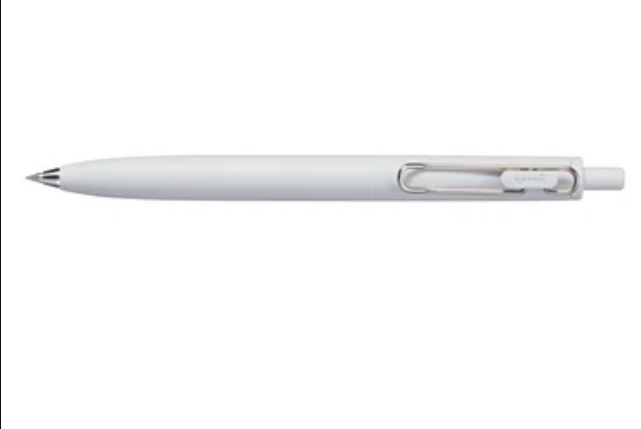
Effortless Stability
Low-center-of-gravity balance keeps every stroke stable and smooth, while Uni-ball One ink delivers deep, crisp lines with a light touch.
$5 NZD
Uniball ONE F
For sketching, drafting, and everything in between.
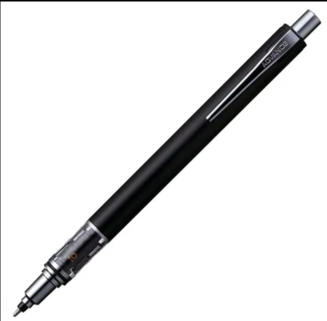
Auto-Rotate
A smart mechanical pencil with rotating lead technology for consistently sharp, precise lines.
$7.50 NZD
Uni Kuru Toga Advance 0.5mm
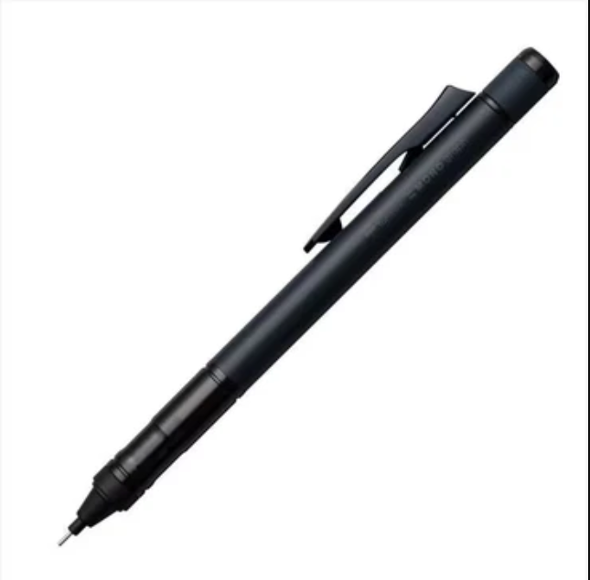
Precision Grip
A sleek, precision mechanical pencil designed for smooth, controlled writing and detailed sketching.
$9 NZD
Tombow Mono Graph Tune
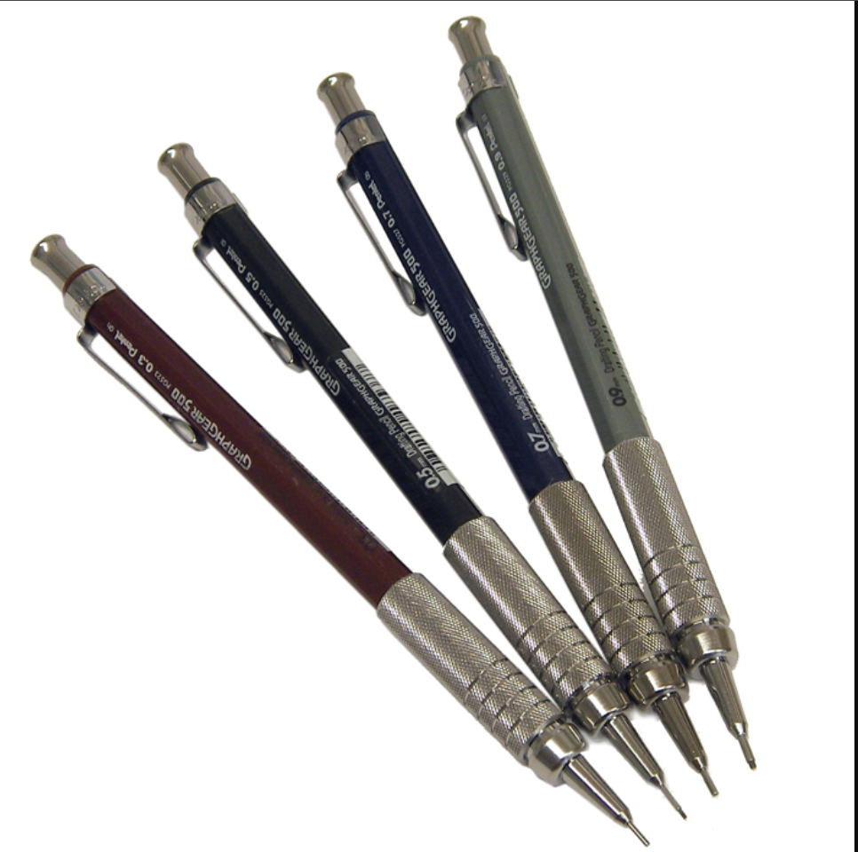
Drafter's Choice
A durable drafting pencil with a knurled grip, balanced weight, and precise control for technical drawing and everyday writing.
$6.50 NZD
Pentel Graphgear 0.5mm
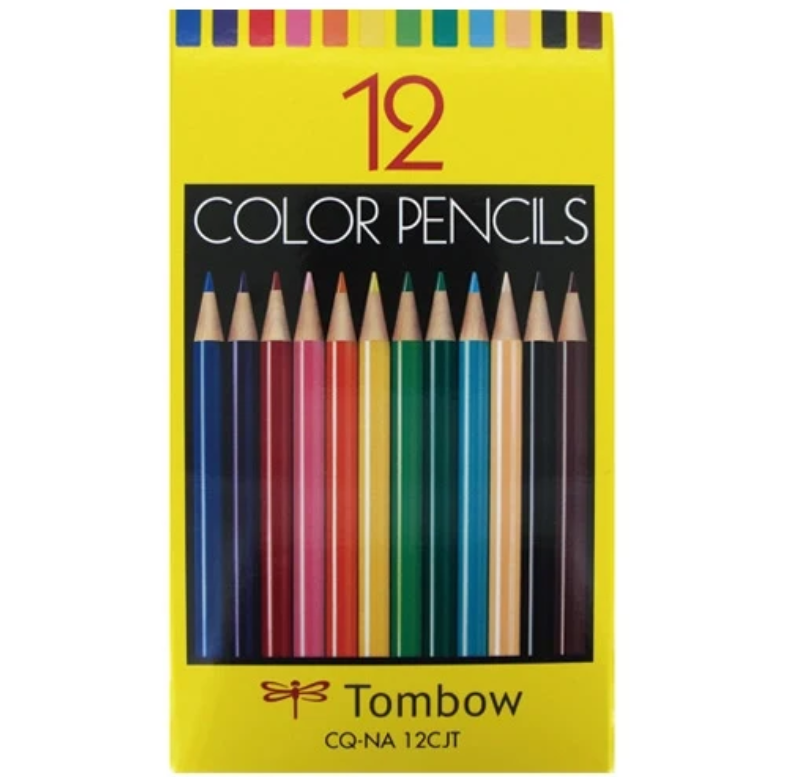
Full Palette
A classic set of 12 coloured pencils with smooth, richly pigmented cores for vibrant colouring, drawing, and creative projects.
Tombow Coloured Pencils
Everyday notebooks for study, work, and journaling.
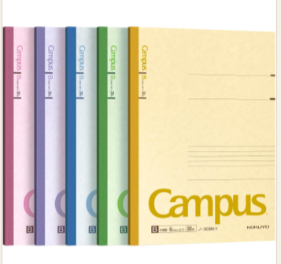
Classic Choice
A compact B5 notebook with smooth paper and a clean, youthful design, perfect for notes, study, and everyday writing.
Kokuyo Standard B5 Ruled
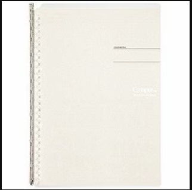
Stay Organised
A slim, lightweight B5 binder with a flexible 26-ring design, making it easy to add, remove, and reorganise your notes.
$14 NZD
Kokuyo Binder Note
Made for Journaling
A minimalist notebook with smooth, fountain-pen-friendly paper, designed for comfortable writing, journaling, and sketching.
$26 NZD
Midori MD A5 Dote Grid
Loose-leaf and planning paper for every workflow.
Everyday Lined
Smooth, reliable loose-leaf paper designed for neat notes, study, and everyday writing.
$20 NZD
Kokuyo Campus Loose-Leaf Ruled
Dot & Line Hybrid
Smooth Campus loose-leaf graph paper with a clear grid layout, ideal for diagrams, calculations, charts, and neatly organised notes.
Kokuyo Campus Loose-Leaf Luz Diagram
Perfect for Diagrams
Smooth-writing loose-leaf paper with dotted B-ruled lines, designed to keep notes, diagrams, and calculations neat and organised.
Kokuyo Campus Loose-Leaf Dot Grid
Clean, precise adhesion for paper crafts and study.
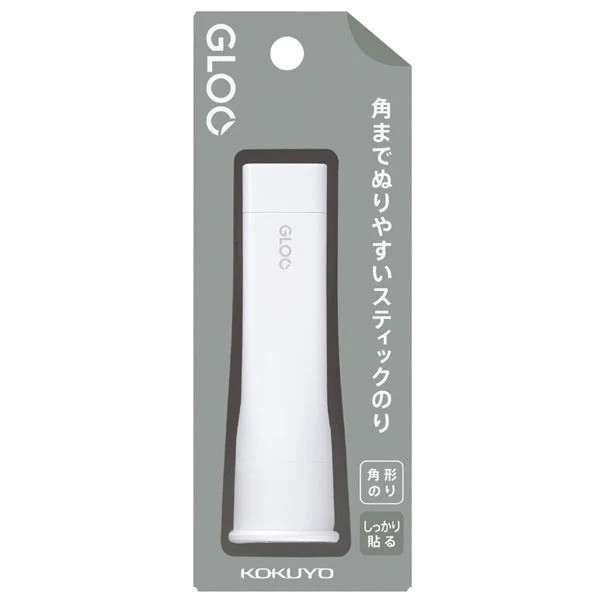
Corner Precision
Precision square-tip glue stick for clean, firm, edge-to-edge application.
Kokuyo Gloo Small White
Award-Winning Hold
Medium-size square-tip glue stick for smooth coverage, precise edges, and a strong, lasting hold.
Kokuyo Gloo Medium White
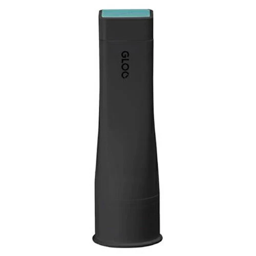
Sleek & Compact
Disappearing-blue square-tip glue stick for precise, even application with a clean finish.
Kokuyo Gloo Small Black
Clean, dust-free correction for pencil work.
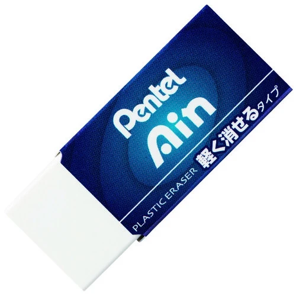
Clean Erase
Smooth, easy-erasing performance with minimal pressure and a clean finish.
$1.50 NZD
Pentel Ain Eraser
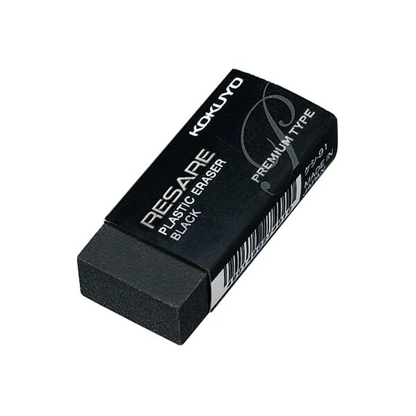
Stealth Black
Premium KOKUYO Keshi-91 eraser for smooth, clean, and effortless pencil-mark removal.
Kokuyo Resare Eraser (Black)
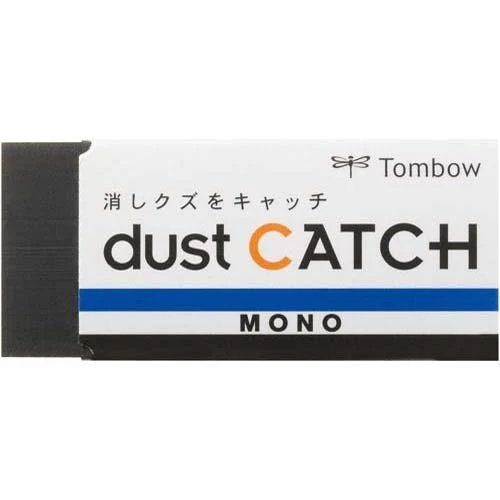
No Mess
Tombow MONO Dust Catch eraser for clean, precise erasing with reduced eraser debris.
Tombow Mono Dust Catch Eraser
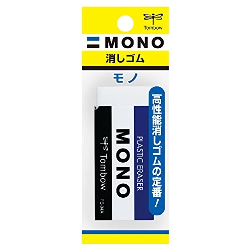
The Original
Tombow MONO PE-04 eraser pack for smooth, precise, and clean pencil-mark removal.
Tombow Mono Eraser
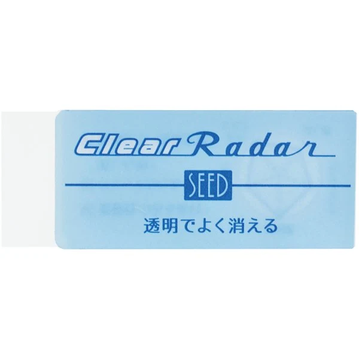
See-Through Clean
Seed Eraser Transparent and Erases Clear Radar
$2 NZD
Seed Clear Eraser
Sharp, precise tools for paper and craft work.
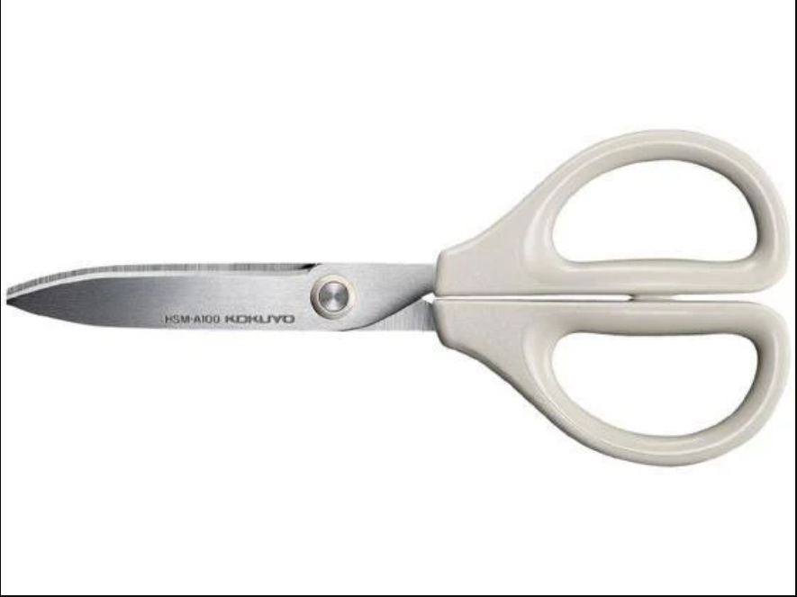
Effortlessly Smooth
KOKUYO scissors for smooth, durable cutting with reduced adhesive buildup.
Kokuyo Standard LS
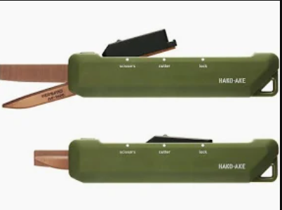
Titanium Precision
Titanium-coated blade - mobile cutter & scissors in one
$22 NZD
Kokuyo Hakoake 2 Way Cutters
Refills, cases, and small essentials to round out your kit.
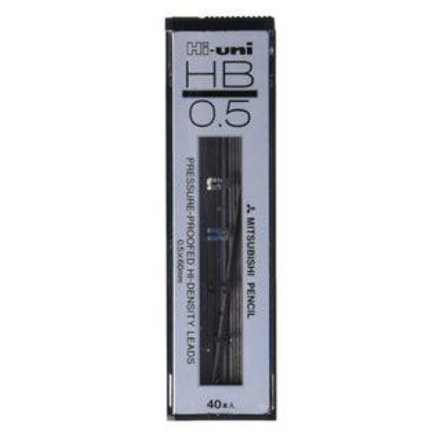
Everyday Refill
Uni 0.5mm HB Mechanical Pencil Refill for smooth, and precise writing.
Uni Mechanical Pencil Refill High Uni 0.5 HB
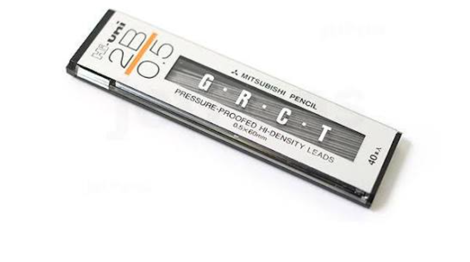
Smooth & Dark
Uni Hi-Uni HB mechanical pencil lead refills for smooth, precise writing, available in 0.3 mm and 0.5 mm sizes.
Uni Mechanical Pencil Refill High Uni 0.5 2B
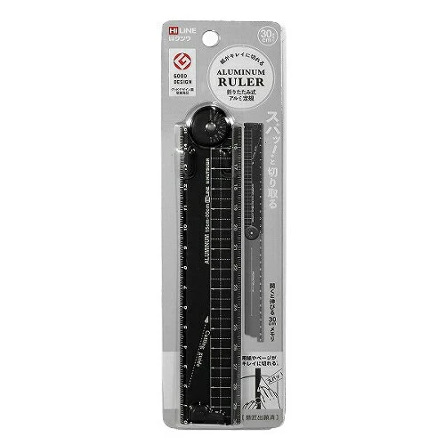
Pocket-Sized Precision
Kutsuwa folding aluminium ruler for compact, precise measuring, available in light blue and black.
$10 NZD
Kutsuwa Folding Ruler Black
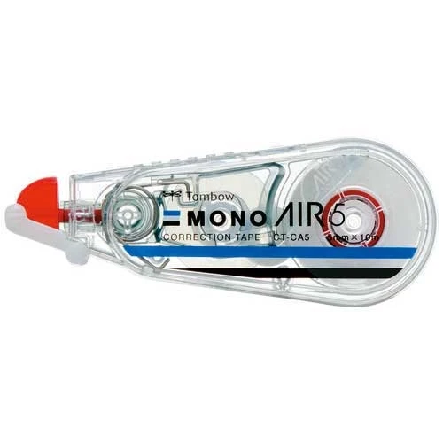
Instant Fix
Tombow MONO Air 5 correction tape for smooth, effortless application and clean, precise corrections.
Tombow Mono Air Correction Tape
Keep your tools organized, protected, and ready to go.
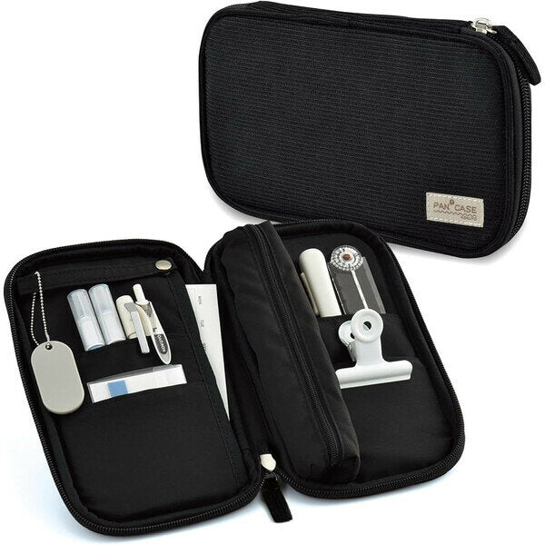
Organised & On the Go
KOKUYO Bread Pen Case multi-compartment pencil case for organised, portable stationery storage, available in blue, black, gray, and yellow.
$25 NZD
Kokuyo Bread Pen Case
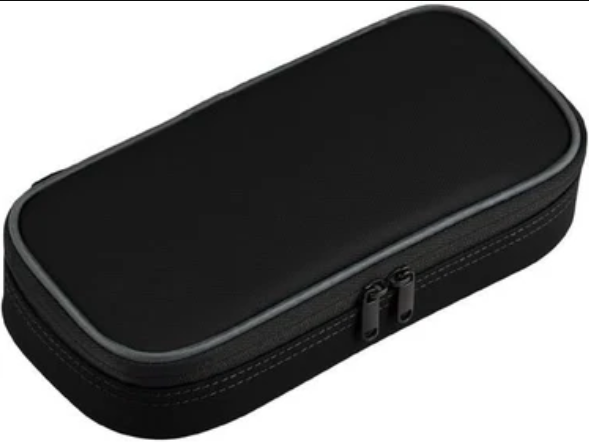
Smooth & Secure
Flexible storage that keeps every pen protected and easy to reach
$44 NZD
Kokuyo Naminami Pen Case
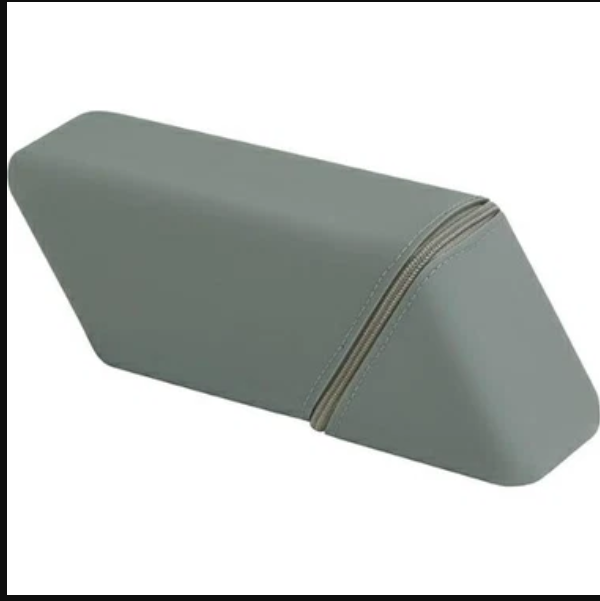
Stand & Select
A 60° divided case that stands steady and keeps every pen easy to spot and grab.
$30 NZD
Sonic Kakusta